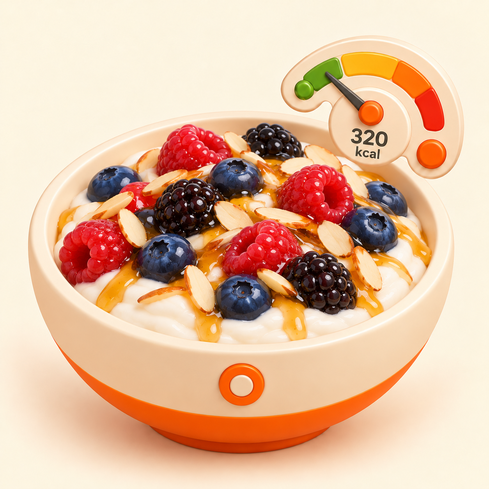

Reference FROZEN r2VESSEL_BOWL · stile e geometria
Una sola candidate confrontata con la reference FROZEN BOWL. Il file non è approvato e non è FROZEN.

1254 × 1254 · 1.919.299 byte · SHA-256 bf5d70cf94a73ff98fb9a2687da829a74fac5279bea4776f6cb17ead173123ba
Yogurt, frutti di bosco, mandorle e miele riconoscibili; un'unica bowl, nessun ingrediente o testo estraneo, `320 kcal` esatto, lancetta coerente con la zona verde-lime.